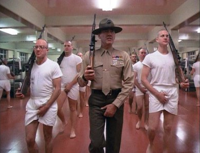

This is my project's main page. There are many like it but this one is mine...

- Landing Page - This is a basic, professional looking Landing
page that some kind of legitimate business would probably use. I got a little silly with the pictures near
the end though...
- Rock Paper Scissors - This is a rock paper
scissors game you can play first to five with the computer. My first Javascript project :) With the things I learned from this project I feel semi-confident that
I could build one of those cool text adventure games... Maybe someday...
- Pixelart Sketchpad - My current pride and joy. A pixel
art sketchpad. You can change the pixel size on the canvas. All complete with cat gifs if you need some further motivation. Just wrote a save
and load function that once you close the page your sketches will be saved to local storage. Enjoy!
- To-Do App - A simple to-do app. I learned about local storage with this. I'll apply that information
to my other projects. Especially the pixelart sketchpad.
- Calculator - It's a calculator. This project about completely broke my brain. By the time I got
all the javascript working I didn't even feel like spending much time styling it. Seriously though, fuck this project.